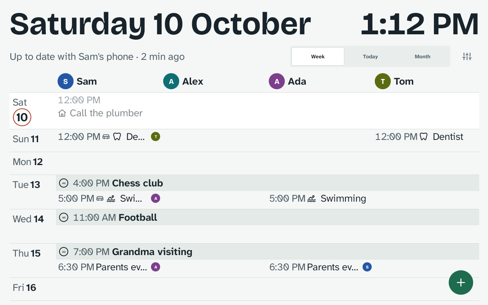
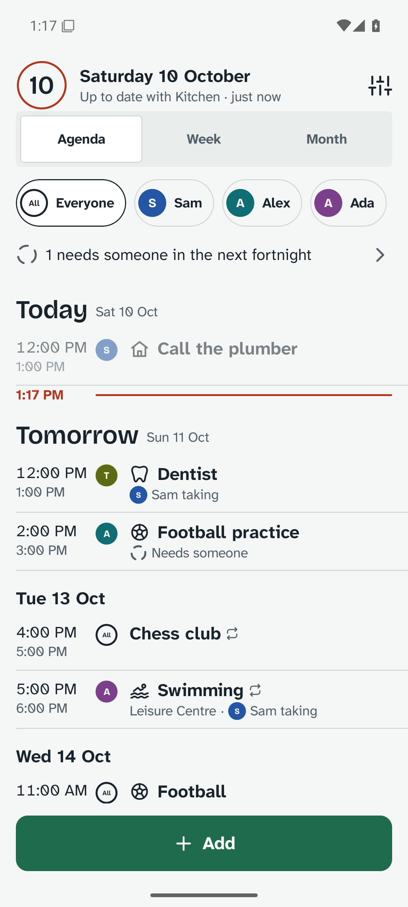
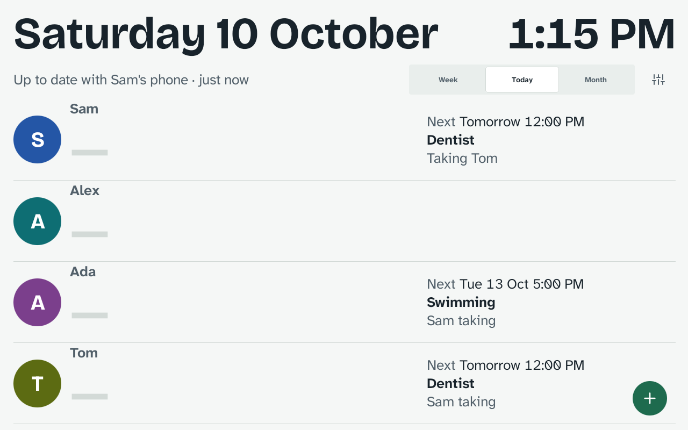
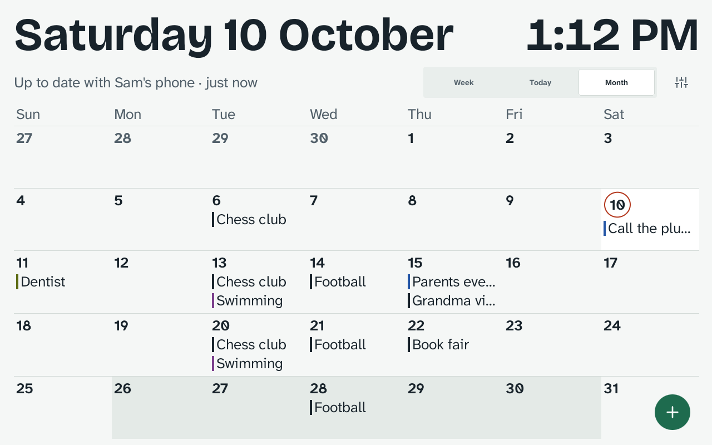
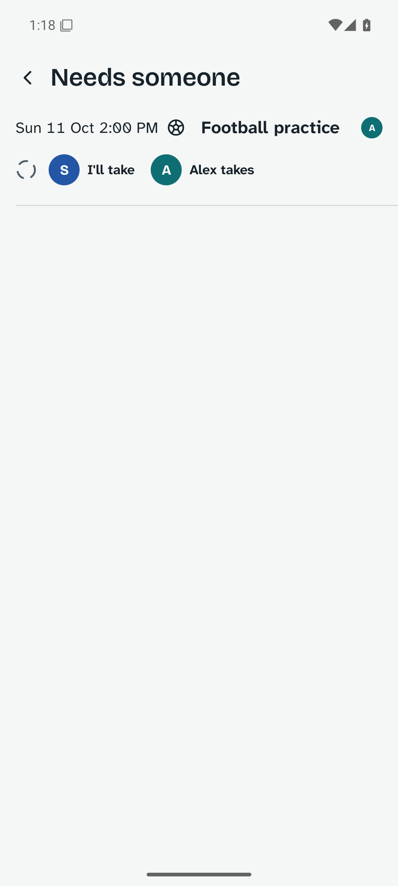
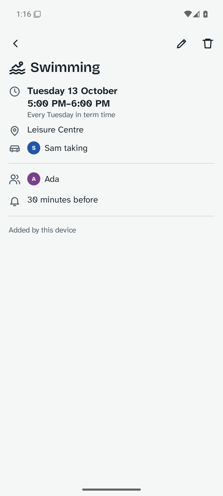
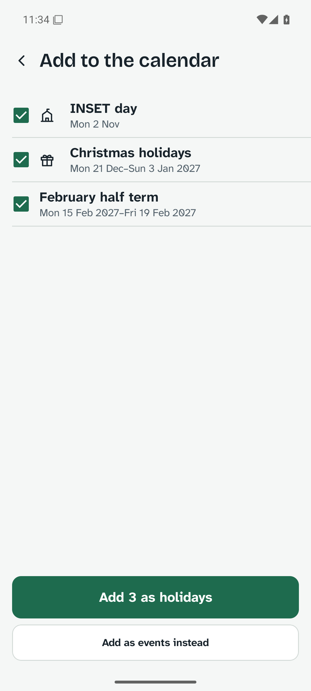
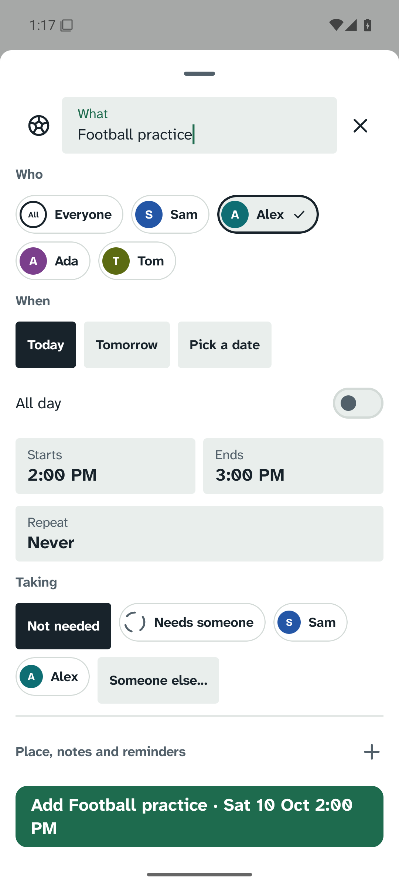

The family calendar, on the kitchen wall and in your pocket.
A tablet on the wall shows the family's week, a column for each person, like the paper organiser it replaces. The parents' phones carry the same calendar, and every event says who is taking them.
Free. Android 9 or later. No account, no adverts, nothing sent over the internet.


Made to be read from across the kitchen.
Today's date and the time are sized for the far side of the table, and everything else for standing at the wall. The sizes are set in millimetres on the glass, so they hold on any tablet.
The week
People across, days down, today circled in pen. Things for everyone run across the whole row.

Today
Each person: what they're doing now, and what's next. "Tomorrow 12:00 PM, Dentist, Sam taking."

The month
School holidays shaded, so you can see half term coming. At night the wall dims to a quiet clock.
Who's taking them?
Every event says who is going and who is taking them, so the dentist on Sunday isn't just "Tom, dentist". When nobody has said yet, it shows an empty circle and joins a short list on the phones.
Tap "I'll take" and it's settled, on every phone and on the wall. Reminders go to the people in it and the person taking them.


Term time, done once.
Enter the school holidays, or open the school's term-dates file, and choose "Add as holidays". Clubs set to "in term time" skip them by themselves.
Changing a repeating event asks once: only this one, this and the following ones, or all of them. Two phones changing the same club while apart can never end up with two copies of it.

Add it in the time it takes to say it.
The add sheet opens on the title. It suggests a picture as you type, and offers who it's for, today or tomorrow, and who's taking them. The button says exactly what will happen: "Add Football practice, Sat 10 Oct 2:00 PM".
Things can also come in from other apps:
- "Add to calendar" buttonsFrom tickets, bookings and email: choose House Calendar.
- Calendar filesOpen a school's or club's
.icsfile. You see the list first and choose what to add. - Shared textShare "Party at Mia's, Sat 3pm" from a message and the day and time are filled in.
- This phone's calendarsCopy the next eight weeks across once, then untick what you don't want.

It stays in the house.
The calendar lives on your own devices. They find each other on your home Wi-Fi and keep each other up to date, with Bluetooth when there's no shared Wi-Fi.
- No accountNothing to sign up for. A new phone or tablet joins by scanning a code from one already in the family.
- No serverThere's nowhere else for the calendar to be. Everything between your devices is encrypted with a key only they hold.
- No internetIt works with the router unplugged. Nothing about your family is sent anywhere, and there are no adverts or tracking.
- Apart, then togetherPhones can change things while out. Everything catches up when they're home, and every device ends up showing the same calendar.
- Your own copyExport the whole calendar to one file, locked with a passphrase, and bring it back into any device in the family.
Install
- Download the app on each phone and on the kitchen tablet.
- Open the file. If asked, allow your browser to install apps.
- On the first phone, choose "Start a family calendar" and add the family.
- On the tablet, choose "Join one from another device", then "The kitchen display". Scan the code from the phone's Settings, Devices and sync.
Needs Android 9 or later. A 10-inch tablet, plugged in, works best on the wall. Bluetooth sync uses Google Play services.
Open source
The source code, the design notes and every release are on GitHub, along with an honest list of what has and hasn't been tested on real devices yet.
Questions
Does it sync with Google Calendar?
It brings things in from your phone's calendars once, when you ask, but it doesn't keep them in step. Keeping them in step would mean sending your calendar through someone's servers, which House Calendar never does.
Does the tablet have to stay on?
Yes. It stays awake so phones can reach it, and outside the day hours you set it dims to a quiet clock. Keep it plugged in.
What if two phones change the same thing while apart?
Both changes arrive at the next sync. If they changed the same detail, such as the time, the later change is kept. Changes to different details, and to different days of a repeating event, are all kept.
Can the children use it?
The wall is for everyone to read and tap. Settings on the wall are behind the tablet's screen lock. Children's own phones aren't supported yet.
Is there an iPhone version?
Not yet. House Calendar is Android only.
What does it cost?
Nothing. There are no adverts and no purchases.